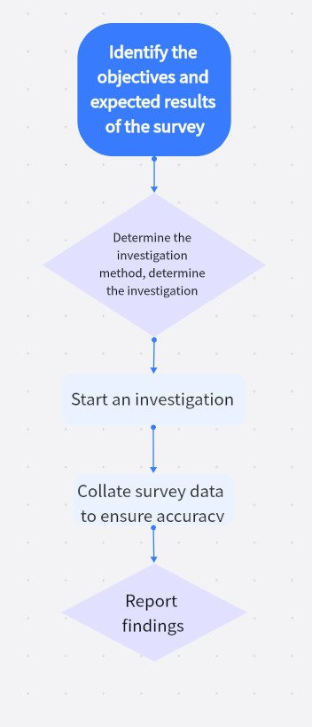

|  |
The first step is to decide the target of the investigation and predict the results. The second step is to design the plan and content of the investigation and decide the time of the investigation. The third step is to start the investigation. |